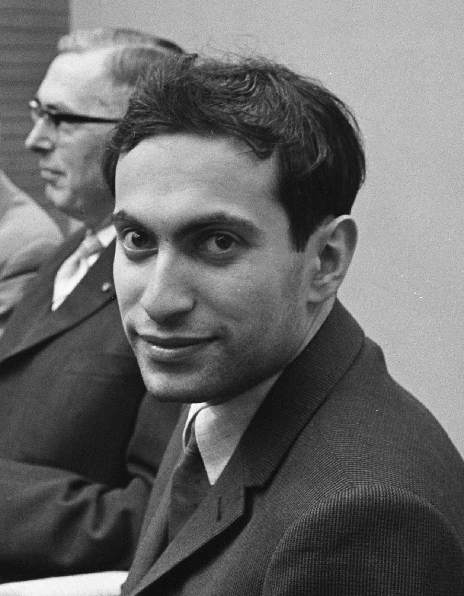
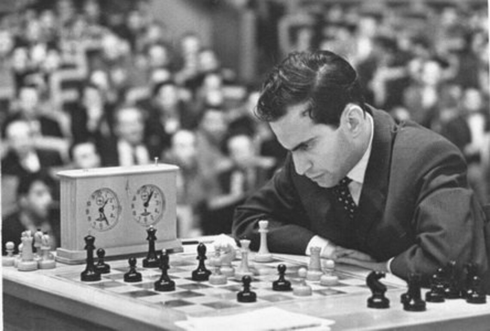

Welcome to the Chess Player profile of The Great Mikhail Tal
The Champion
The Legend
The Greatest of all time

Mikhail Nekhemyevich Tal, was born in 1936 and was one of the greatest Soviet Latvian chess players. He was born in Riga, Latvia, and would later be known as “The Magician from Riga” due to his unique and special playing style. It is this approach, which made him a world champion in 1960.
During his illustrious career, Mikhail Tal won numerous games, most notably the world championship in 1960. Tal was never afraid to attack and improvise. His style of play was daring, combinatorial, and was very unpredictable. Mikhail Tal lived and breathed the game of chess. He once said that chess is invaluable and inimitable to him as a poem.
In 1953, Mikhail Tal had his first performance at the team Championship of the USSR. He took the 1-2 places on the table! Two years later, he won the semifinal game of the personal Championship of the USSR. This time, the player only took the 5-7 places. This was also a big success for a 20-year-old chess master. Overall, Tal won the championships of the USSR 6 times. It happened in 1957 and 1958 consecutively. Then, with interruptions, in 1967, 1972, and 1974. The last time was in 1978.
Mikhail wasn’t any less successful in international tournaments.
It took place in Yugoslavia. The tournament included 8 players. Three of them were future World Champions, namely, Tal, Fischer, and Petrosian. And one was the Champion in the past (Smyslov). Eventually, Tal won with 20 out of 28 points, outperforming Keres with 18,5 points.
The World Championship between Tal and Botvinnik took place in Moscow. The unique thing about it was the contestants had never met each other before. So the event promised to be interesting. There were 24 games played, and the one with higher scores would win. Tal started from a victory. Then, there was a small series of draws. After that, Mikhail won two more games. Eventually, he won the match before the end with scores of 12,5-18,5. In terms of wins counted, it was 6-2.
"You must take your opponent into a deep dark forest where 2+2=5, and the path leading out is only wide enough for one." – Mikhail Tal
Books Written by Mikhail Tal
Russians Versus Fischer
The Life and Games of Mikhail Tal
Tal-Botvinnik, 1960
Attack with Mikhail Tal
Study Chess with Tal

Awards
The youngest player to win the USSR Championship at the age of 20.
Overall, Tal won the championships of the USSR 6 times.
In 1960, at the age of 23, Tal defeated Botvinnik in a World Championship match.